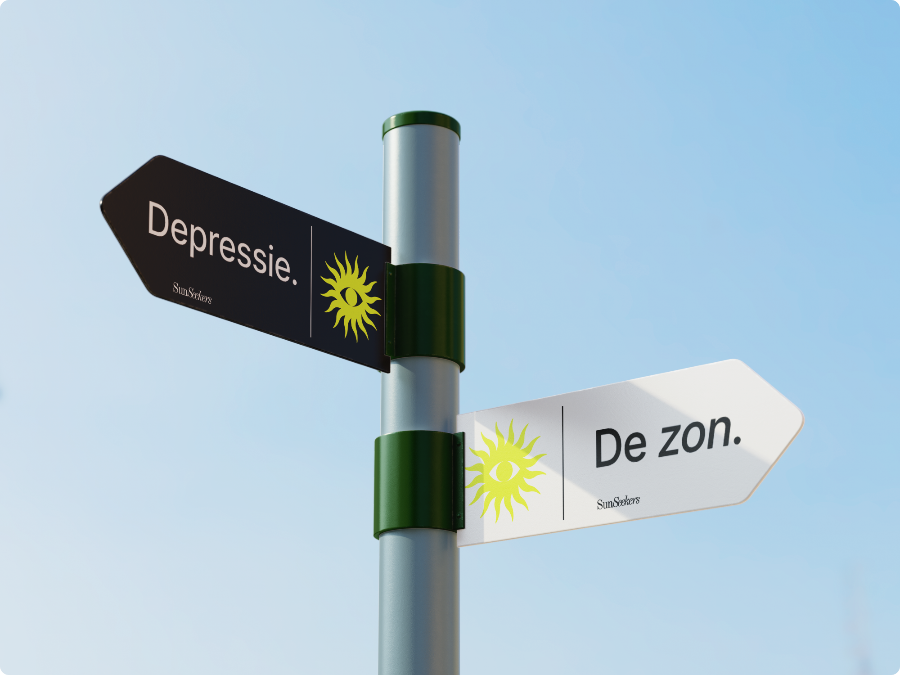
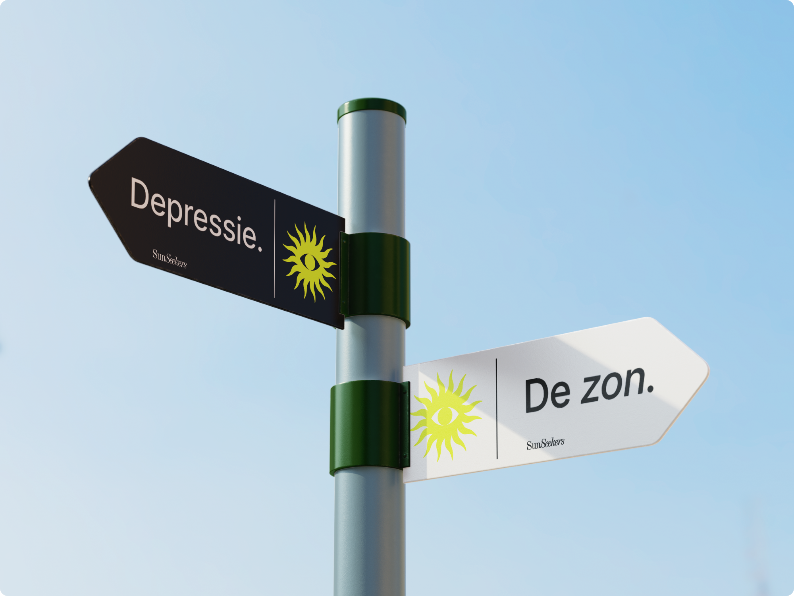

Opdrachtgever: School
Datum: 25//05//2024
SunSeekers - Een concept dat leguanen helpt meer energie te krijgen van de zon.
Concept
Leguanen hebben dagelijks veel zon nodig en halen hier onwijs veel voordelen uit. Ik heb een app ontwikkeld die leguanen helpt om de voordelen uit de zon te halen. Door visueel te laten zien hoelang ze nog in de zon moeten zitten en welke voordelen ze hieruit halen, worden de leguanen gemotiveerd om meer in de zon te zitten en het beste uit zichzelf te halen.
Behavior design
Op deze website en app zitten een aantal psychologische theorieën waarmee de leguaan op een ethische wijze wordt gestimuleerd om onze app te kopen. Zo wordt de leguaan door een "funnel" geleidt waar hij doormiddel van kleine trucjes overtuigd wordt zich aan te sluiten bij SunSeekers. Benieuwd naar deze trucjes of mijn proces? Neem gerust contact met me op, info staat in de footer.
Visual design
Voor de visuals ben ik in het thema gebleven van het leefgebied van de leguaan en de zon, ik heb dus geel als hoofdkleur gebruikt. De look and feel van dit project is professioneel en modern. Hier heb ik voor gekozen omdat het een geloofwaardig concept moet zijn waar de leguaan zich bij aan wil sluiten en hier trots op is. Om de leguanen wel nog te laten resoneren met dit concept heb ik het nog wat toegankelijker gemaakt met de doodles en de fotografie.


 
